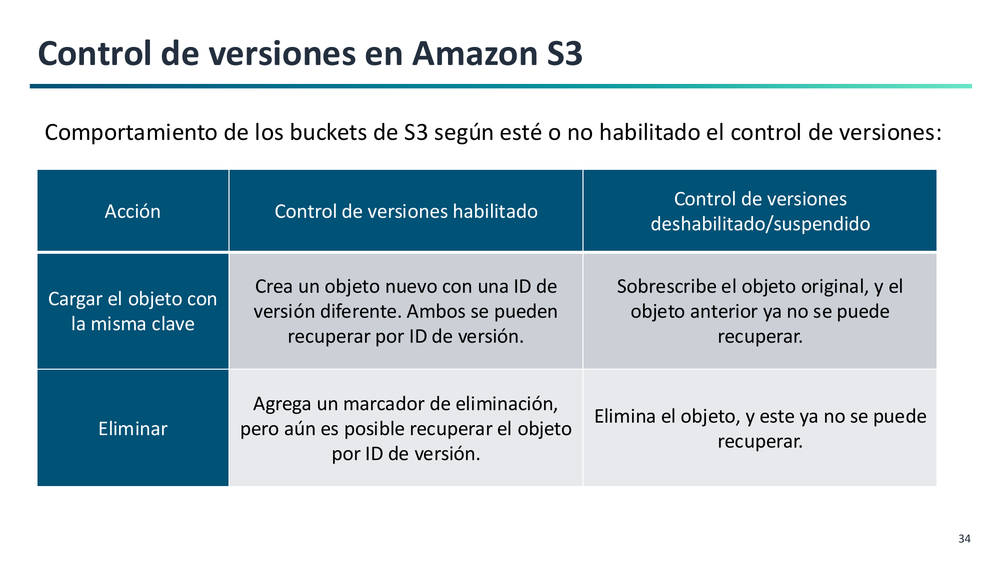
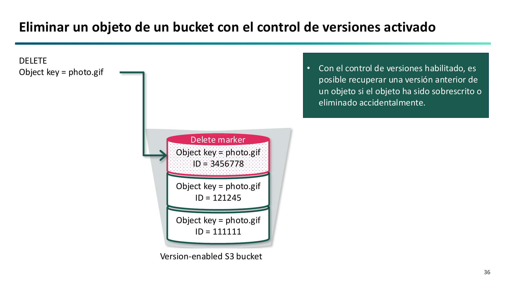
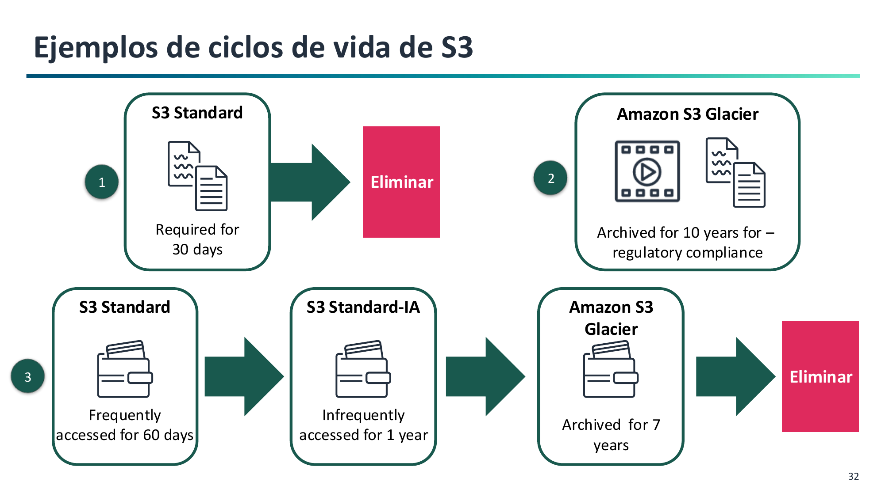

4. Gestión del Ciclo de Vida, Versionado e Inmutabilidad¶
Gestionar el ciclo de vida de los datos permite proteger los objetos contra borrados accidentales y optimizar los costes a medida que la información envejece (RA2.g).
Control de Versiones en Amazon S3 (S3 Versioning)¶
El control de versiones mantiene múltiples variantes de un mismo objeto dentro del mismo bucket.

Estados del versionado
Un bucket nuevo empieza en estado No versionado (Unversioned). Una vez habilitado (Enabled), nunca puede volver al estado inicial; únicamente puede ser suspendido (Suspended).
¿Cómo operan las acciones con Versionado Habilitado?¶
- Subida (
PUT): Si subes un archivo con el mismo nombre que uno existente, S3 no lo sobrescribe. Asigna un nuevoVersionIdcriptográfico y lo sitúa como la versión actual. Las versiones anteriores siguen intactas. - Lectura (
GET): Por defecto devuelve la versión actual. Se puede solicitar una versión histórica indicando suVersionId. - Borrado lógico (
DELETEsinVersionId): S3 inserta un marcador de eliminación (Delete Marker) en la cabecera. El objeto parece haber sido eliminado (devuelve error 404 al intentar leerlo), pero sus versiones siguen guardadas.

- Recuperación: Para recuperar el archivo, basta con eliminar el Delete Marker. La versión anterior vuelve a convertirse en la actual.
- Borrado permanente (
DELETEconVersionId): Solo si se especifica el identificador de versión concreto se destruyen físicamente los datos.
Políticas de Ciclo de Vida (S3 Lifecycle Rules)¶
Una política de ciclo de vida automatiza el movimiento de objetos entre clases de almacenamiento y su eliminación definitiva:

Consta de dos tipos de acciones:
- Acciones de transición: Trasladan objetos a clases más económicas a medida que envejecen (ej. de Standard a Standard-IA a los 30 días, y a Glacier Flexible a los 90 días).
- Acciones de expiración: Destruyen versiones antiguas no actuales tras un número de días determinado (ej. purgar versiones de hace más de 180 días) o eliminan subidas multiparte incompletas (
AbortIncompleteMultipartUpload).
Bloqueo de Objetos (S3 Object Lock) e Inmutabilidad WORM¶
Permite implementar el modelo WORM (Write Once, Read Many), impidiendo la sobrescritura o eliminación de objetos durante un periodo fijado. Exige tener el versionado activado.
Dispone de dos modos de retención:
- Modo Gobernanza (Governance Mode): Los usuarios normales no pueden borrar el objeto, pero usuarios con el permiso especial
s3:BypassGovernanceRetentionpueden modificar el plazo o eliminarlo en caso de necesidad. - Modo Cumplimiento (Compliance Mode): Nadie, ni siquiera el usuario root de la cuenta de AWS ni el soporte de Amazon, puede borrar el objeto antes de que venza la fecha de retención legal.
- Retención Legal (Legal Hold): Conmutador manual (
ON/OFF) sin fecha de expiración fijada, utilizado durante litigios o auditorías.